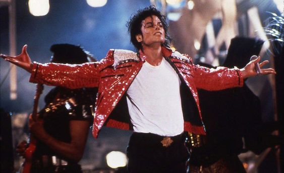
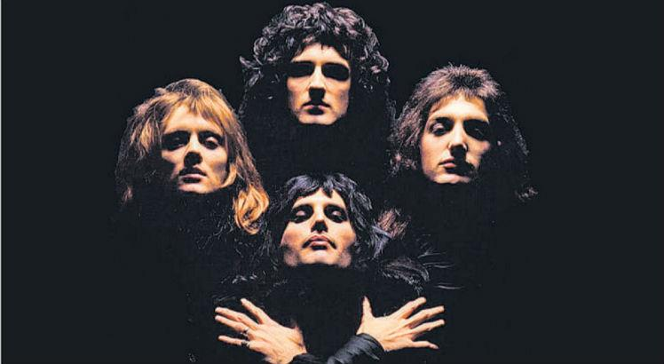

Postado por:

Amanda Silva
- há 2 horas

75 mil likes
Video clipes que mudaram tudo:
Os videoclipes hoje em dia possuem o importante papel de divulgar um artista nas mídias sociais e recentemente com a explosão de TikTok, viralizar danças e entrar nos trendings. Essa ferramenta do audiovisual não é antiga e hoje, trouxemos alguns dos clipes que mudaram a indústria da música para sempre!

Tudo começeu em 1975...